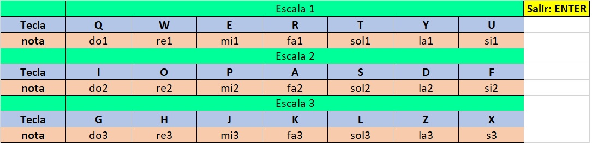
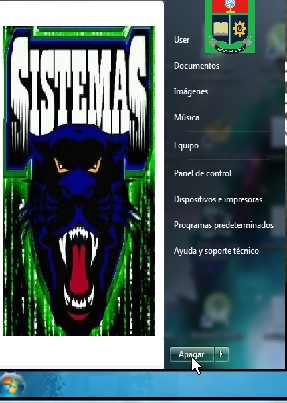
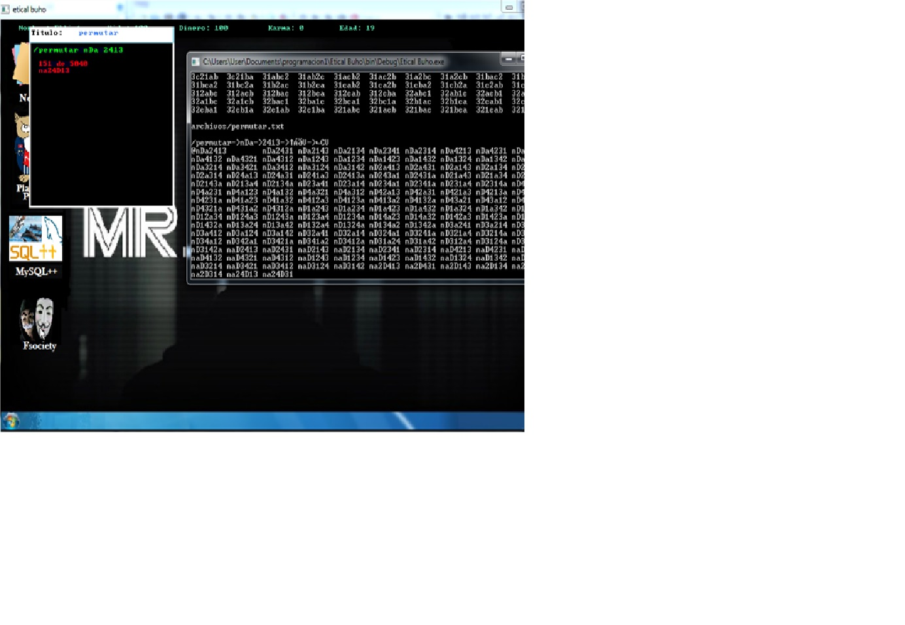
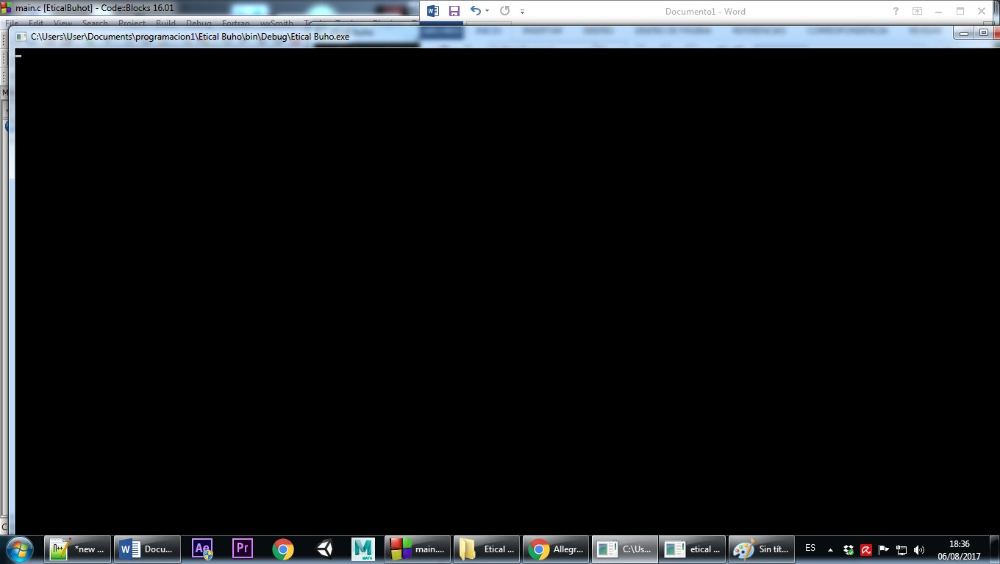

ETICAL BUHO es un juego basado en la famosa serie Mr.Robot acerca de un joven que trabaja como ingeniero de seguridad informática y usa sus habilidades para proteger a las personas por las que se preocupa. En ETICAL BUHO acercamos al jugador a una manera mas didactica de entender el "ethical hacking" ademas de utilizar el manejo de archivos en el proceso.
Para crear este videojuego hemos utilizado la libreria Allegro esta es una biblioteca libre y de código abierto para la programación de videojuegos desarrollada en lenguaje C. Allegro es un acrónimo recursivo de «Allegro Low Level Game Routines».La biblioteca cuenta con funciones para gráficos, manipulación de imágenes, texto, sonidos, dispositivos de entrada (teclado, ratón y mandos de juego) y temporizadores, así como rutinas para aritmética de punto fijo y acceso al sistema de archivos.
Al acercarse al banco café del piano con las teclas (“j, i, l, k”) y una vez allí apretando el botón “a”, aparecerá una pequeña ventana negra que le pedirá el título de la canción que va a componer. Al escribir por ejemplo: “sinfonía” y posteriormente presionar ENTER, se creara un archivo .txt en el que se almacenara la canción que va a tocar. Un menú aparecerá en la pantalla e indicara las teclas con las que puede hacer sonar el piano. Para salir de ese estado deberá presionar ENTER.
Al acercarse al banco azul y presionar ‘a’ se abrirá un pequeño simulador de Windows.
Para salir del mismo deberá darse clic izquierdo al círculo de la parte inferior izquierda con el logo de Windows y posteriormente darle clic a “apagar”. (Si se dio clic por error en ese lugar se puede eliminar ese menú dando clic nuevamente en el círculo con el logo de Windows)
En el computador abran 4 programas funcionales:
Este programa permite guardar informacion de manera rapida.
Al dar clic izquierdo sobre el bloc, podremos escribir. Primero nos pedirá un título, ingresamos el título corto deseado y pulsamos ENTER. Nos generara un archivo .txt con ese nombre.(Todo lo de archivos se generara y manejara en la carpeta “archivos” del proyecto.
Desde ese momento todo lo que se escriba quedara documentado en el archivo creado. Parar salir debemos presionar ESCAPE.
Este programa lee un archivo de texto y cada letra del mismo lo convierte en un sonido. Al dar clic sobre el programa tan solo debemos ingresar el título del archivo que queramos leer de la carpeta “archivos”. Ejemplo si nuestro archivo se llama: “test.txt” y está en la carpeta archivos (proyecto CodeBlocks). Para reproducirlo simplemente debemos escribir ‘test’ (sin las comillas). Una vez escrito, presionamos ENTER y comenzara a reproducirlo.
Una base de datos es una colección de información organizada de forma que un programa de ordenador pueda seleccionar rápidamente los fragmentos de datos que necesite. Una base de datos es un sistema de archivos electrónico.
Este programa permite “crear scripts”. Mediante comandos sencillos. Al darle clic nos aparecerá una pantalla negra y nos pedirá un titulo del script, lo ingresamos y nos genera un archivo .txt. Luego se escribe cuidadosamente los comandos: -> /permutar [palabra] [palabra] Al escribir por ejemplo “/permutar a bc” nos imprimirá las posibles combinaciones entre “abc”: abc,acb,bac,bca,cab,cba. Esta función nos permiirá buscar coincidencias entre palabras y contraseñas hasta encontrar una coincidencia. O completar todas las permutaciones posibles.

También puede interactuar con el CMD, ejemplo: Si después de agregar titulo escribimos exactamente “/system mode 200” y luego pulsamos ENTER, veremos cómo nuestro CMD se agranda.
• Si escribimos “/system color 0a” nos cambiara el color de las letras que aparecen en el CMD.
• Si escribimos “/system start [archivo]” nos ejecutara el archivo que tengamos en el directorio por defecto,es necesario ubicar la consola de comandos a través de “cd documents…” hasta llegar a la capeta que deseemos.Otra utilidad de “start” es abrir paginas web “/system start www.google.com” nos ejecutara la pagina de google.
• Si escribimos “/system ping www.facebook.com” estaremos haciendo una petición de servicio, esto nos abre una idea de lo que se hace en un ataque de negación de servicio (ataque DDoS) • Si escribimos “/system copy /b 1.jpg+2.rar 3.jpg” nos copiara estos archivos dentro de un nuevo archivo es decir, podremos meter archivos dentro de una imagen
• Si escribimos “/system fc /b 1.txt 3.txt” nos comparara dos archivos en modo binario y nos dira sus diferencias. Vease sus variantes